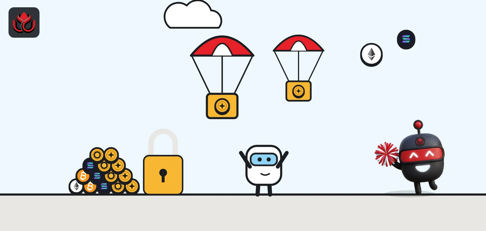
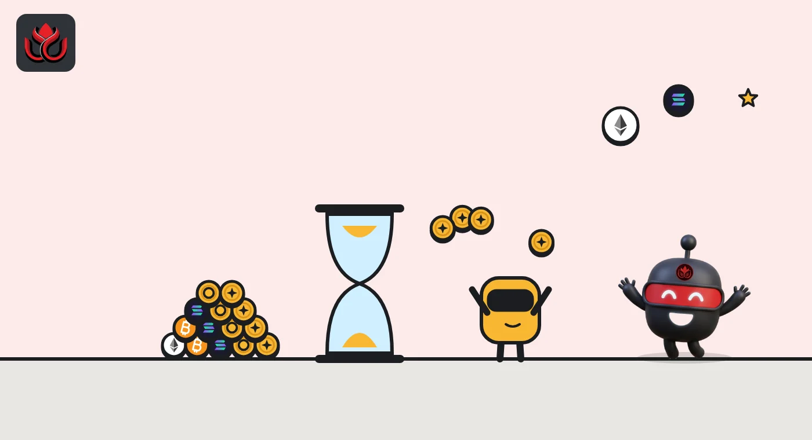
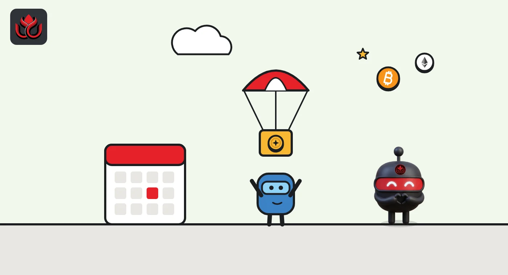

Binance Launchpool and HODLer Airdrops explained: how BNB holders earn new tokens
Launchpool pays a new token hour by hour to people who lock BNB or stablecoins; HODLer Airdrops pay one after the fact to people who held BNB in Simple Earn during a past window. Both depend on your share of a pool, and both carry price risk.

Key points
- Launchpool: you lock supported assets such as BNB, USDC or FDUSD and earn a new project's token every hour, in proportion to your share of the pool.
- HODLer Airdrops: Binance looks back at BNB held in Simple Earn products during a past window and pays a new token based on average balances.
- Binance takes several snapshots an hour and, in past airdrops, capped any single user at 4% of the total average BNB holding.
- Rewards are new, often volatile tokens. Binance tags many of them as high risk, and BNB's own price can fall.
What DeepSea's data shows
Launchpool and HODLer Airdrops reward BNB held on Binance, and DeepSea's data shows how much moves through the exchange. Its Binance page tracks 391 wallets on 17 chains holding $144.40 billion, including $33.64 billion on BNB Chain.
In the seven days to November 2, $368.29 million of BNB entered those wallets and $254.31 million left, DeepSea shows. Overall, Binance's tracked wallets saw a net outflow of $1.55 billion over the same week. DeepSea covers the wallets it has labeled, so these are not Binance's full reserves.
Data: DeepSea (desea.io), checked November 2, 2026, 7:55 a.m. ET.
What is Binance Launchpool?
Launchpool is a Binance feature that hands out a new project's tokens to people who lock existing assets on the exchange. According to Binance's own guide, last updated June 29, 2026, you lock supported assets such as BNB, USDC or FDUSD and earn the new token in return. The locked assets stay yours.
Each project usually opens two or three pools, one per locked asset, each with its own estimated yield. The size of the reward pool and the farming period are fixed when the project launches. Current pools are listed on the Launchpool page.
How does Launchpool farming work?
- Pick a pool and lock. You choose how much to lock in a pool.
- Rewards build every hour. Your reward is your share of everything locked in that pool, so the more others lock, the smaller your slice.
- Unlock any time. Binance says you can unlock early and keep what you earned so far.
- Automatic return. At the end, your assets and rewards go back to your Spot account.
Because rewards are counted hourly, the first payout may not show up right after you lock, Binance notes.
Binance also says not every project that applies is accepted for Launchpool, and its guide stresses that the content is educational, not financial advice. Pools for the same project can pay very different estimated yields, because each pool's reward is split among everyone who locked that asset.

What are Binance HODLer Airdrops?
HODLer Airdrops reward people who already hold BNB in Binance's Simple Earn savings products. There is nothing to lock for a specific project. Binance announces a token, then pays it out based on BNB held during an earlier window.
The Movement (MOVE) announcement from December 2024 shows how it works. Users with BNB in Simple Earn Flexible or Locked products between December 2 and December 5, 2024 (UTC) were eligible. Binance announced the airdrop on December 9, the same day trading opened at 8 a.m. ET, and credited tokens to Spot wallets one hour before trading began.
The key word is retroactive. Binance said users did not need to do anything beyond holding BNB in Simple Earn. Because the window is in the past by the time the token is named, there is no way to join a specific airdrop after it is announced. Binance's guide sums up the difference: Launchpool requires locking, while HODLer Airdrops reward BNB held at a designated snapshot.
How are HODLer Airdrop rewards calculated?
For MOVE, Binance said it took snapshots of user balances and total pool balances several times every hour, and turned them into each user's average balance. It used snapshots from random periods to calculate rewards. Each user's share was capped at 4% of the total average BNB holding, so very large holders could not take everything.
The MOVE airdrop was 200 million tokens, 2% of the 10 billion maximum supply. At listing, 2.25 billion MOVE (22.5%) were circulating. Binance added that another 5% of total supply would go to HODLer Airdrops six months after the spot listing.
MOVE supply at listing (HODLer Airdrops example)
% of max supply

How is Launchpool different from Launchpad and token sales?
Binance describes Launchpad as its broader token launch platform, similar to an initial exchange offering. Depending on the project, it can include direct token sales, where you pay for tokens. Launchpool is one mechanism inside it, where you earn tokens by locking assets. HODLer Airdrops sit beside both: no locking for a specific project and no payment, only past BNB holdings.
Token launches can also go wrong after a sale. In October 2026 Binance postponed trading of PREDICT after its sale had closed.
What should you check in an airdrop announcement?
Each HODLer Airdrops announcement sets out the terms for that token. Using the MOVE notice as an example, the key items are:
- The eligibility window. For MOVE it was four days, December 2 to December 5, 2024, and it had already closed when the airdrop was announced.
- Eligible products. Simple Earn Flexible and Locked BNB products counted for MOVE.
- Supply figures. Maximum supply, the airdrop's share, and how much circulates at listing. For MOVE: 10 billion maximum, 2% airdropped, 22.5% circulating.
- Future allocations. MOVE set aside another 5% for HODLer Airdrops six months after listing.
- Trading pairs and time. MOVE opened against BTC, USDT, BNB, FDUSD and TRY at 8 a.m. ET on December 9, 2024.
- Risk labels. Whether a Seed Tag applies.
A small circulating share at listing means more tokens can enter the market later, which is worth knowing before treating an airdrop as free money.
Who can take part?
Both programs require a verified (KYC) Binance account in an eligible country. For MOVE, Binance excluded users in places including the United States, the United Kingdom, Canada, Australia, Japan, Hong Kong and the Netherlands, and said its list was not exhaustive. Each announcement sets its own rules, so the list can change.
What are the risks?
- The new token can fall. Binance applied a Seed Tag to MOVE, its label for tokens it considers high volatility and high risk.
- BNB's price moves too. As of November 2, 2026, at 8 a.m. ET, CoinMarketCap showed BNB at about $703, down about 1.2% in 24 hours and roughly 49% below its all-time high of about $1,371 set in October 2025. A token reward does not offset a fall in the asset you hold.
- Diluted rewards. Your share shrinks as more users lock or hold BNB.
- Platform risk. Assets stay on the exchange during the program. Binance says it is not liable for trading losses.
BNB's supply also changes over time through quarterly burns, which do not change your number of BNB but do change your share of the total.
LC Insight analysis
This section is our reading of the facts above, not a statement of fact.
- We think HODLer Airdrops reward patience more than timing. Because Binance looks back at a past window, moving BNB in after an announcement does not help.
- The real risk is the new token, not the mechanics. Projects often reach the market with a small share circulating, as MOVE did at 22.5%, and further unlocks can follow.
- Both programs make BNB more useful on Binance, which ties the payout to one exchange's decisions on listings and eligibility.
What's next
- New Launchpool and HODLer Airdrop announcements, and their regional exclusions.
- Whether Binance changes the 4% per-user cap or snapshot rules.
- How listings handle delays after token sales, as with PREDICT.
Frequently asked questions
Do I lose my BNB in Launchpool?
No. Binance says locked assets stay yours and return to your Spot account at the end, and you can unlock early. Their value can still fall while locked.
Do I need to sign up for a HODLer Airdrop?
No separate sign-up was needed for MOVE. Eligible users holding BNB in Simple Earn Flexible or Locked products during the window received tokens automatically.
Can a whale take the whole airdrop?
Not for MOVE. Binance capped each user's share at 4% of the total average BNB holding.
When do airdropped tokens arrive?
For MOVE, tokens reached Spot wallets one hour before trading opened.
Disclaimer. This article is based on public information and the sources listed below as of the update time shown. It is for information only and is not investment, legal or tax advice. Figures may change as companies and authorities publish new data.